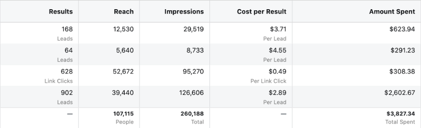
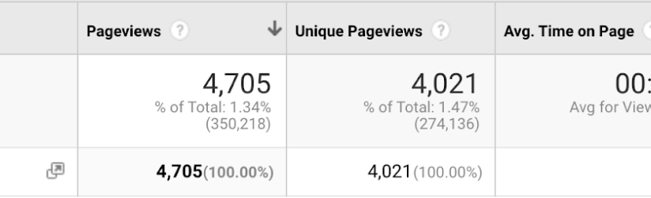
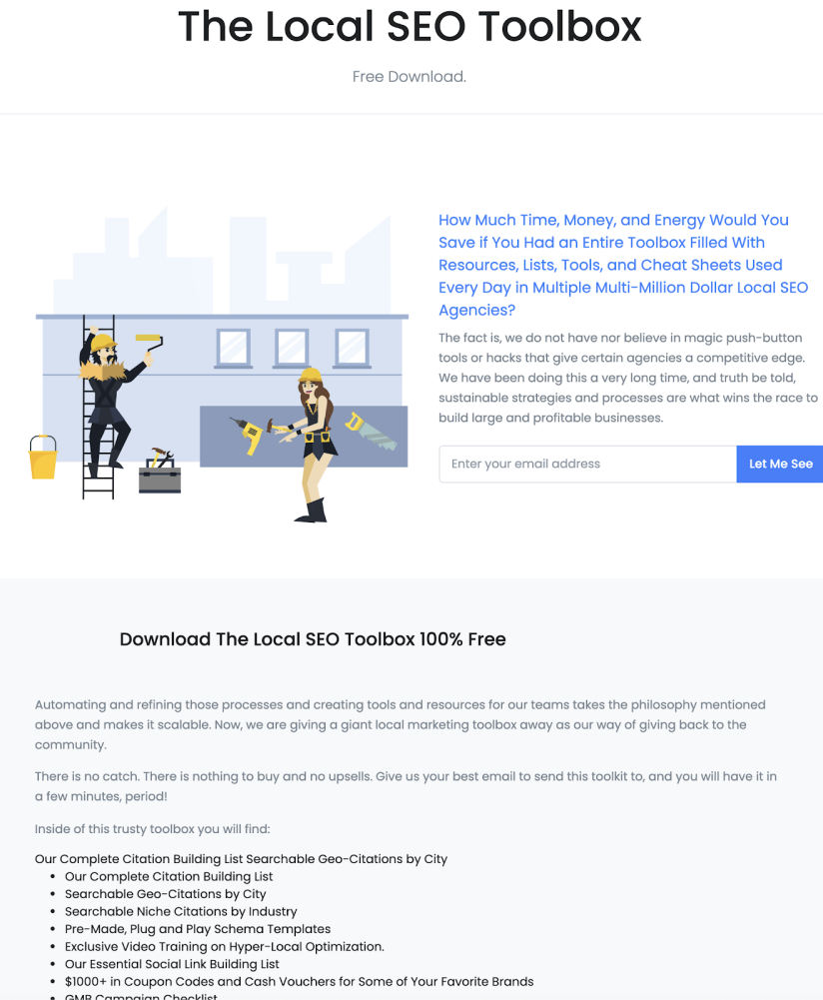
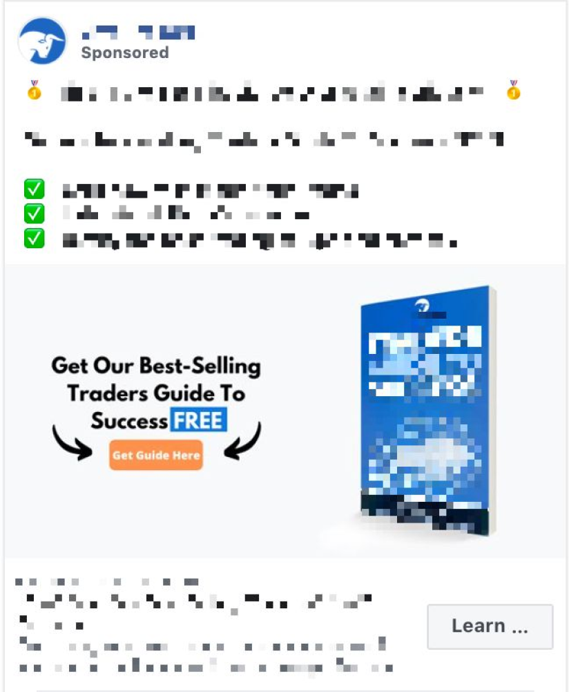

Ancient War Strategy Responsible for 100m+ in Revenue, Explained
Posted on August 6,2020
by Mark Luckenbaugh
No, that was not Clickbait
Yes, it works in any industry, no matter how boring or vanilla it might be.
In this post, I will outline the strategy as well as demonstrate the results we achieved with our Trojan Horse strategy across multiple industries with varying amplification methods and ad spends from $10k per month to over 100k per month.
1184 bc
Homers Iliad tells us of a great war, between the Trojans and Greeks, sparked by Trojan prince Paris abducting and marrying Helen, wife of a Spartan king.
The Greeks terrorized the countryside for years but couldnt conquer the city of Troy. Finally, the Greeks built the Trojan Horse and faked sailing away.
The Trojan Horse was filled with Greek soldiers but presented as a gift to the city of Troy. As the city celebrated their “victory” the Greeks left their hiding spot inside of the giant horse and opened the gates for their fellow soldiers that sailed back under the shroud of nightfall.
The city fell.
Now, staunch historians see this as a story rather than a historic war strategy, but this concept can make your business a tremendous amount of money.
You see, when focusing on inbound marketing, your only focus needs to be on crafting your pages conversion elements, your message, etc. People are coming to you and seeking out an answer to a query or a solution for a specific problem.
Building an inbound strategy is essential, but when it comes time to really get yourselves out there and market your offer, you need to position your interruptive marketing in a way that builds trust and drives sales.
Thus, the Trojan Horse.
I am going to detail out some of the exact Trojan Horse strategies we have used for our clients and the results we brought. I will also give some examples that even in the most obscure b2b niches, we can build rapport and slide right into their good graces.
Like the Greeks, we are going to use a “gift” or an “offering of value” to get past the city gates.
Once we are inside (they accept the gift) the piece of value not only works as an active piece of marketing, but we also received that first “handshake” so we can continue the conversation with them.
Example:
An example, from our SaaS marketing case study, is Local Viking and the Trojan Horse we built for them.
 This is not the most mature Trojan Horse capaign we have
At the moment it is producing sub-four dollar leads, handshakes with agencies in LVs target market that are saying, "YES! This will provide value to us. Lets shake hands and give me the info"
This campaign is a complete machine
A very simple front end for cold traffic, a guide, allows us to lower our audiences guard and allow us in
Look at those lead numbers.
For pennies, we are getting leads into our system that are being sold products and interacting with our clients brand.
Another brand we work on, this one providing a grab bag of Trojan Horse potential enjoys a 12x+ ROAS (return on ad spend).
They spend $1.
They spend $12.
Recently we developed a game plan that included using a Trojan Horse to get businesses interested in a client of ours.
Our client is in pharmaceutical distribution so they are targeting pharmacies. Our USP is getting the same brand of product you currently stock but at prices up to 50% cheaper.
So, we hit the whiteboard and started brainstorming how we can kill a few birds with one stone.
Goal: We wanted to accomplish the following things
Get in front of decision-makers at pharmacies
Get their information so we can continue to market to them and push them closer to the sale Have whatever we use to get in front of them act as an additional tool to trigger a purchase or at least consider one.
Provide a ton of value so we build goodwill We ended up designing a white paper on “Strategies to Increase Pharmacy Profits and Revenue” that we could market to the decision-makers at a pharmacy. One of the first points was of course looking to cut costs on their stocked medication by sourcing from cheaper companies.
Of course, we required an opt-in to get the white paper so we now have the contact info for the person at the pharmacist that we can communicate with to push them deeper into our conversion process.
Please note, this was not a quick, sloppy piece of content we put together just to snag downloads.
It was very well researched and provided a lot of value for the end-user. We did not give simple tips like “market yourself locally” or “create relationships with Dr.s”. Keep that in mind when developing assets for your content marketing, take the time or make the investment in quality.
Provide real value.
Its a very simple process.
We skip the cold outreach altogether and create a handshake
Create an asset that you can have someone download or text/email them. Provide real value and create something they will truly appreciate. Sprinkle your brand in there and do not be afraid to have it almost advertorial like so long as you are really helping them out with this content. Use retargeting and email marketing to continue pushing them down the path to becoming a customer. It is a simple 1-2 punch that has created countless amounts of revenue for us and others.
No matter your industry or product, a Trojan Horse can be developed to take your acquisition to the next level. Let’s connect and turn your content marketing into a cash printing machine.
Create Partnership
No, that was not Clickbait. Yes, it works in any industry, no matter how boring or vanilla it might be. In this post, I will outline the strategy as well as demonstrate the results we achieved with our Trojan Horse strategy across multiple industries with varying amplification methods and ad spends from $10k per month…
Create Partnership
No, that was not Clickbait. Yes, it works in any industry, no matter how boring or vanilla it might be. In this post, I will outline the strategy as well as demonstrate the results we achieved with our Trojan Horse strategy across multiple industries with varying amplification methods and ad spends from $10k per month…
Create Partnership
No, that was not Clickbait. Yes, it works in any industry, no matter how boring or vanilla it might be. In this post, I will outline the strategy as well as demonstrate the results we achieved with our Trojan Horse strategy across multiple industries with varying amplification methods and ad spends from $10k per month…
Create Partnership
No, that was not Clickbait. Yes, it works in any industry, no matter how boring or vanilla it might be. In this post, I will outline the strategy as well as demonstrate the results we achieved with our Trojan Horse strategy across multiple industries with varying amplification methods and ad spends from $10k per month…